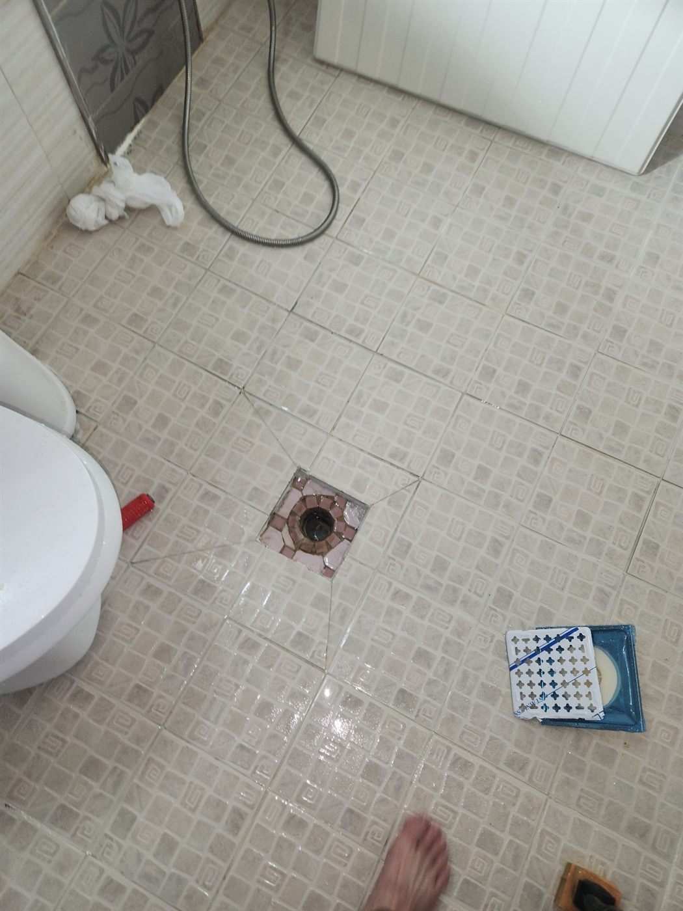
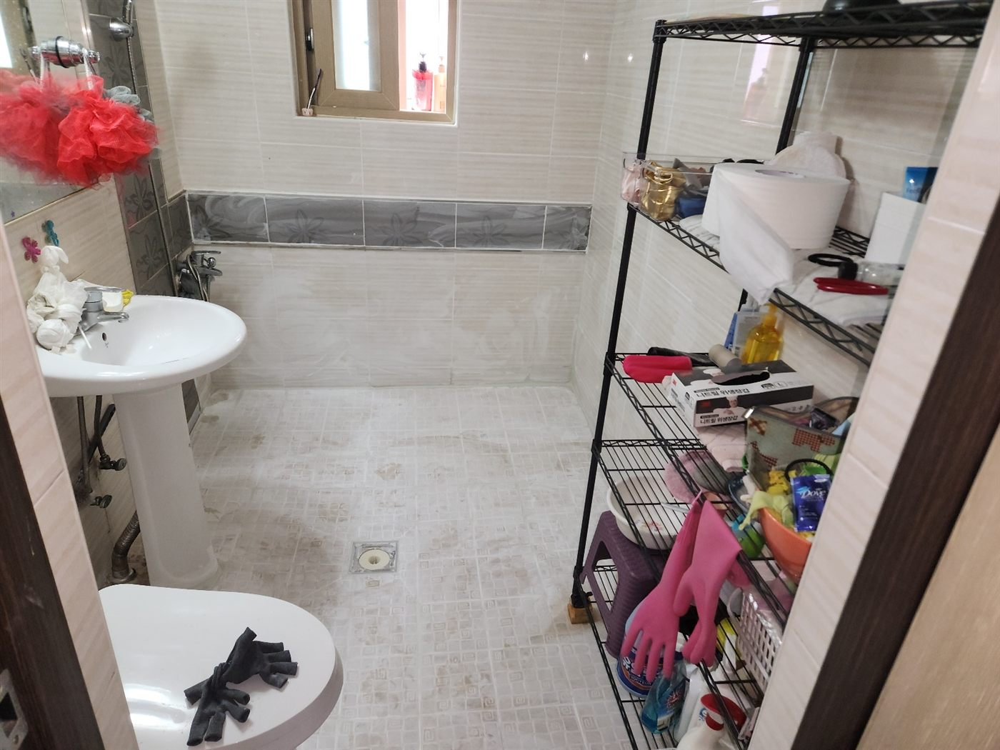
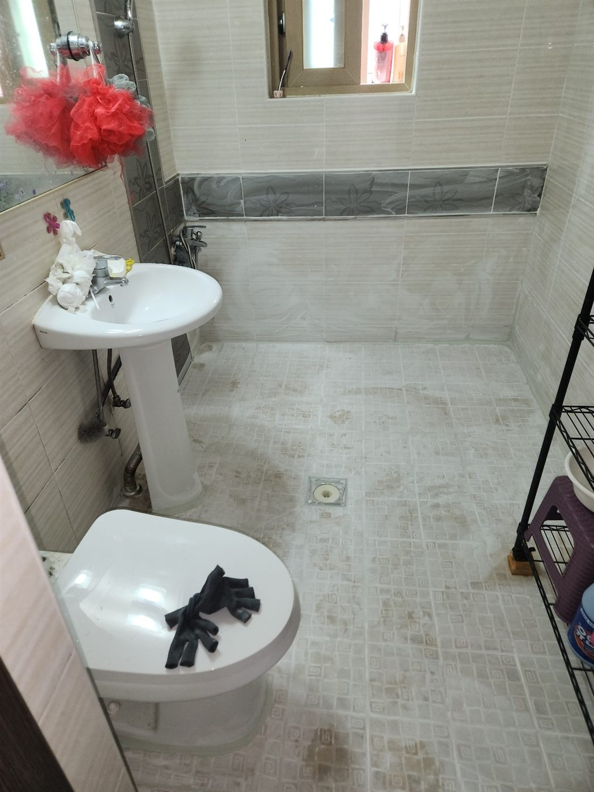
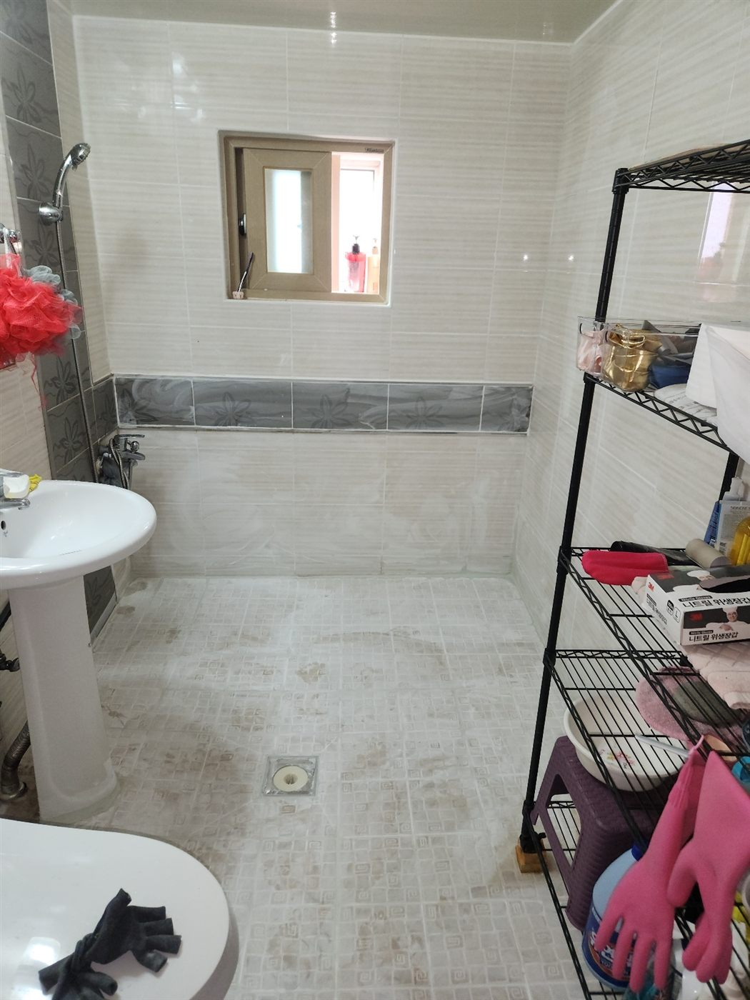

현장 상황
평택시 세교동 화장실의 바닥 배수구(유가) 교체와 방수 작업을 진행한 현장입니다. 유가는 화장실 바닥 물을 하수관으로 보내는 배수구로, 주변 방수가 약해지면 물이 아래로 스며들기 쉬운 자리입니다.
배수구 주변 확인
배수구 주변 타일을 걷어내고 배수구와 바닥 마감이 만나는 부분을 살폈습니다. 이 접합부로 물이 들어가면 바닥 방수층이 손상되기 쉽습니다.

변기 탈거와 철거
배수 배관과 방수층을 제대로 보려면 변기를 먼저 떼어내야 했습니다. 변기를 탈거하고 바닥 일부를 철거해 오물 배관과 배수구 주변을 드러냈습니다.
유가 교체와 방수
노후한 유가를 새 제품으로 교체하고 주변 바닥에 방수 작업을 한 뒤 타일을 다시 마감했습니다. 방수는 한 번에 두껍게 바르는 것보다 얇게 나눠 바르는 편이 더 견고합니다.

작업 완료
변기를 다시 설치하고 화장실 바닥 전체를 정리해 마무리했습니다.



유가 주변 방수가 중요한 이유
유가는 화장실 바닥에서 물이 가장 오래 고이는 곳이라 바닥 방수층과 만나는 접합부가 가장 먼저 약해집니다. 유가만 바꾸고 주변 방수를 하지 않으면 같은 자리에서 다시 새기 쉬워서, 교체와 방수를 함께 진행합니다. 마감 후에는 물을 채워 배수와 방수 상태를 확인합니다.
마무리
화장실 배수구 주변에서 냄새가 나거나 물이 천천히 빠진다면 유가 노후를 의심해 볼 수 있습니다. 바닥을 열어야 하는 공사라 일찍 발견할수록 공사 범위를 줄일 수 있습니다.
유가 교체와 방수 작업은 물을 채워 배수와 방수 상태를 함께 확인한 뒤 마무리합니다. 평택 세교동 화장실누수가 의심되시면 편하게 문의해 주세요.
접수 안내
비슷한 증상으로 문의하실 곳을 찾고 계신다면 전화로 접수해 주세요. 접수 건은 확인 후 신속하게 연결해 안내해 드리며, 현장 진단 후 견적에 동의하신 뒤에만 작업이 진행됩니다.